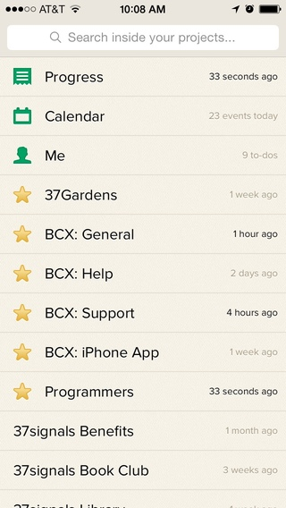
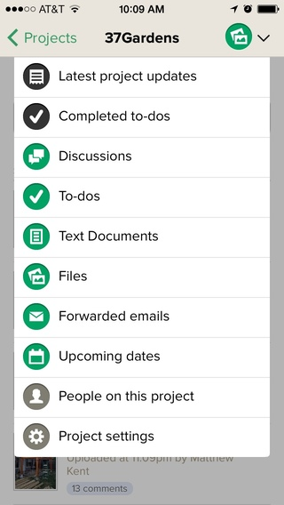
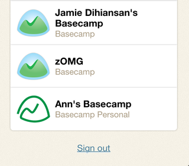

Quick question? Get fast answers on Twitter.
Tweet a question to @37signals for a quick answer between – Mon–Fri.
Apple users can install our iPhone app. It's designed for speedy access to your projects. The iPhone app will run on any Apple device supporting iOS 7 or later. It's free to install!
iPad user? Go ahead and access Basecamp in your Safari browser. You can use the mobile view, or switch to the standard view to access your account.
Like the mobile optimized version of Basecamp, the iOS app lets you see everything in your account. And you can switch between accounts too! 
You'll see every discussion, list, file, text doc, date and forwarded email in your projects. You can create new discussions, lists, dates, add comments and upload files to comments. You can add new tasks to existing to-do lists. You can create and edit text documents. 
Want to log out of your account? Click the "Switch Basecamp accounts" button and you'll see the option. 
Some features didn't make the cut. You can't start a new project from the iPhone app. The iOS app doesn't have an Everyone page, but you can see all the folks in each project. You can upload files to messages and comments, but you can't upload stand-alone files. We know Push notifications are super useful on your iPhone, but they're not available in version 1. Sorry about that!
You can archive projects in the iPhone app, but you won't be able to see your archived projects. You can delete project items, but you can't restore them. Log into Basecamp on your desktop if you need to restore!
If you have a new Basecamp account, but don't see it when you log into your app, check your Launchpad Settings and make sure your account is visible in your Launchpad.
Go behind the scenes and see how we built our iOS app
Next help article: iPhone App Troubleshooting →
Tweet a question to @37signals for a quick answer between – Mon–Fri.
For in-depth questions, you can file a support ticket to get answered personally by us.